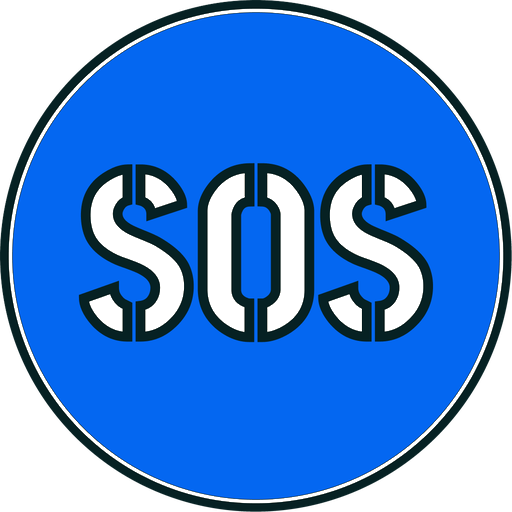
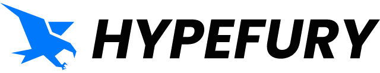
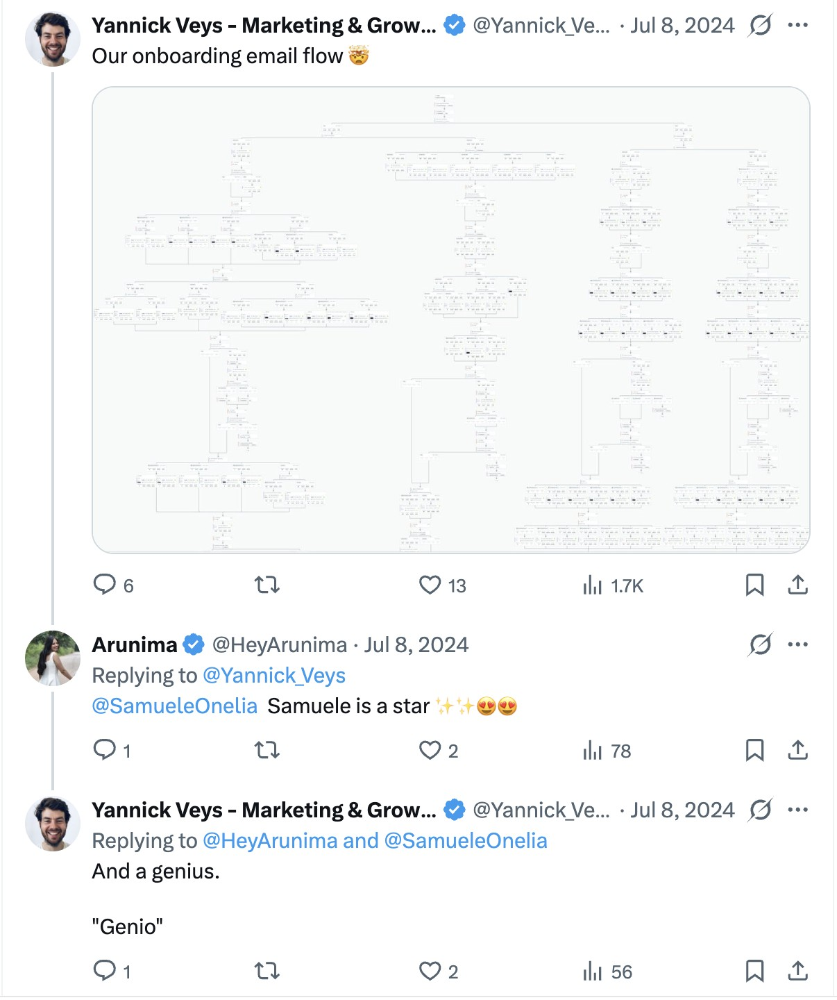

My own media and training business: a YouTube channel co-grown to 19,000 subscribers, paid programs on copywriting and email marketing, and a podcast of 200+ founder interviews, repeatedly featured as a top show on Apple Podcasts Italy.

I take the work your team still does by hand and rebuild it as software that runs on its own.
Start a project
My own media and training business: a YouTube channel co-grown to 19,000 subscribers, paid programs on copywriting and email marketing, and a podcast of 200+ founder interviews, repeatedly featured as a top show on Apple Podcasts Italy.

I run every email this SaaS sends — campaigns, the weekly newsletter, the whole list — on Customer.io and Beehiiv, and I ghostwrite all of it.

I owned all content for the Italian site and worked on the US site's, then oversaw both migrations from WordPress to Ghost.

A CRM built from scratch that handles customer enrolments, trips, costs, revenue and invoicing on its own.
A custom CRM that tracks incoming orders, plus a chatbot that takes orders from customers on WhatsApp and files them without anyone retyping a thing.

Automations that work out how many staff are needed each day and contact them, and that spread reservations across the evening so customers wait less.

An AI automation that writes and publishes their LinkedIn and Instagram content on its own, plus a Google Maps scraper feeding their prospecting.

A system that tracks Facebook Ads results and sends every client a monthly report, with nobody assembling it.

A system that collects and analyses sales data, tracks how each salesperson is performing, and turns it into a clear monthly report.

Hypefury's co-founder, on the onboarding email flow I run.
Read it on X →
I connect the tools you already use, so work moves between them without anyone copying it across.
Multi-agent pipelines with verification gates and a human in the loop.
Campaigns, newsletters and large lists, run end to end.
Sales copy and long-form newsletters, in English and Italian, in your voice.